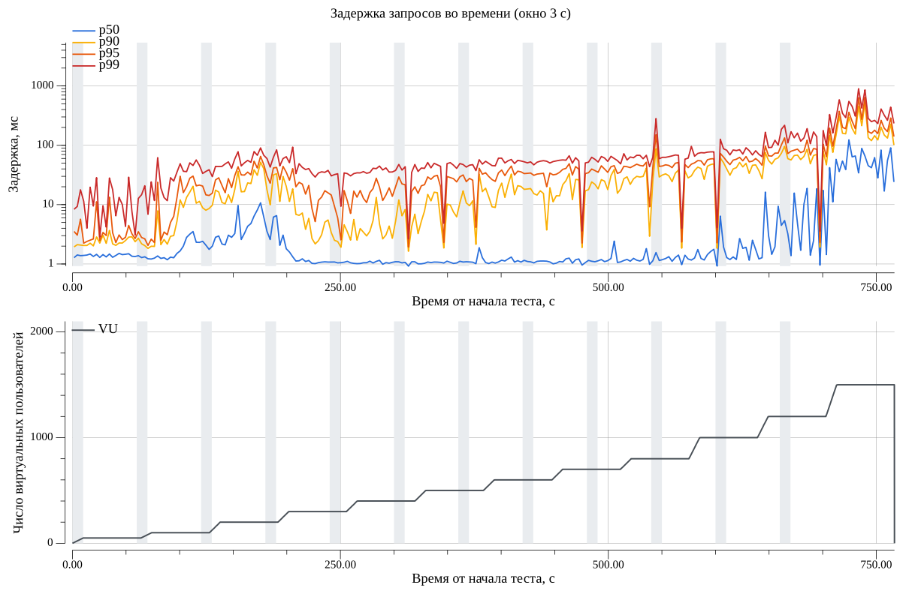
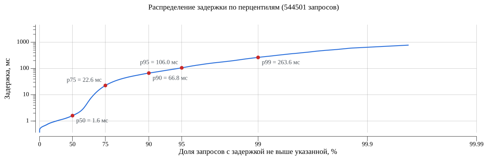
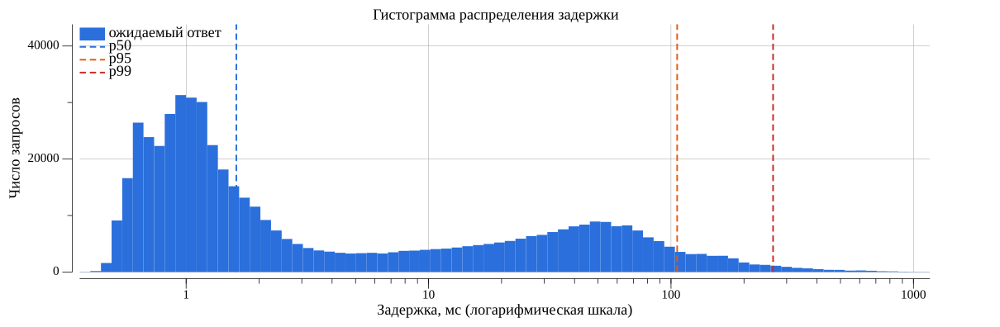
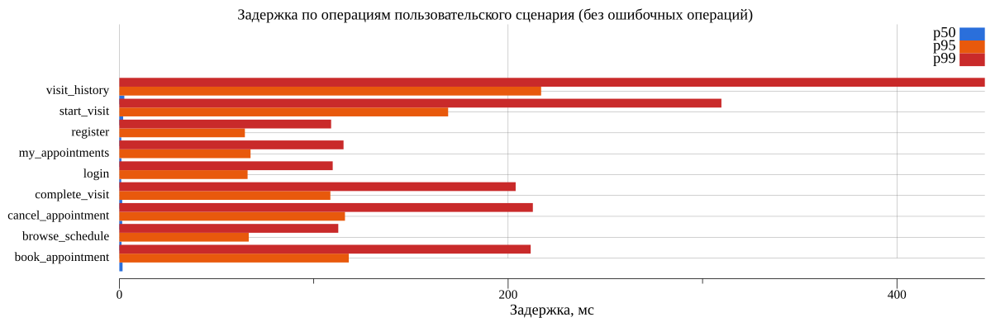
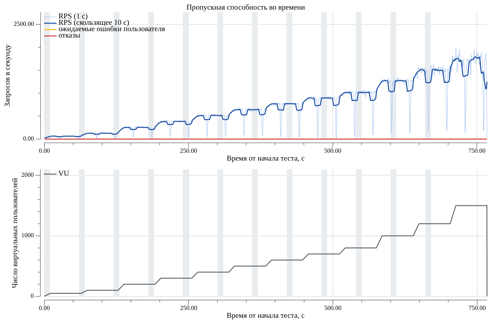
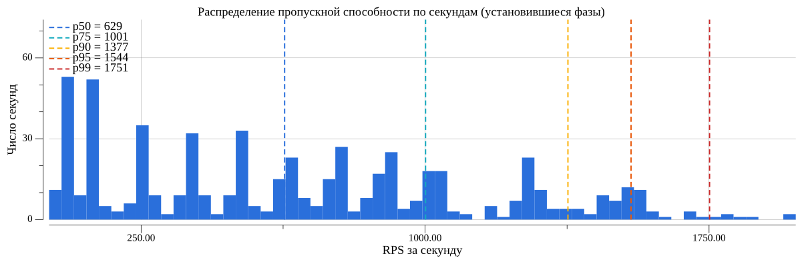
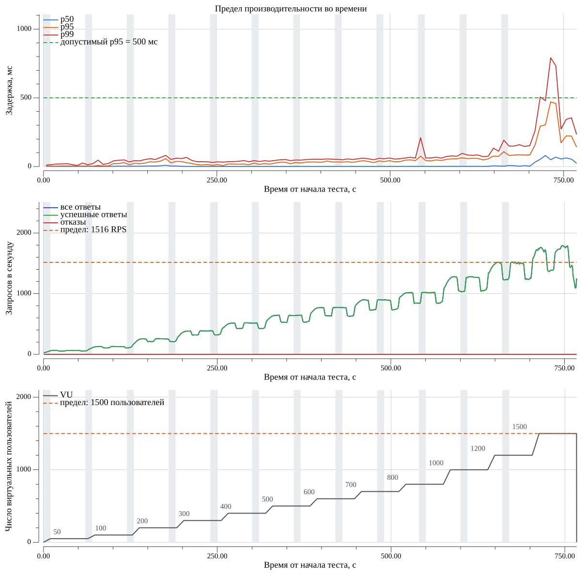
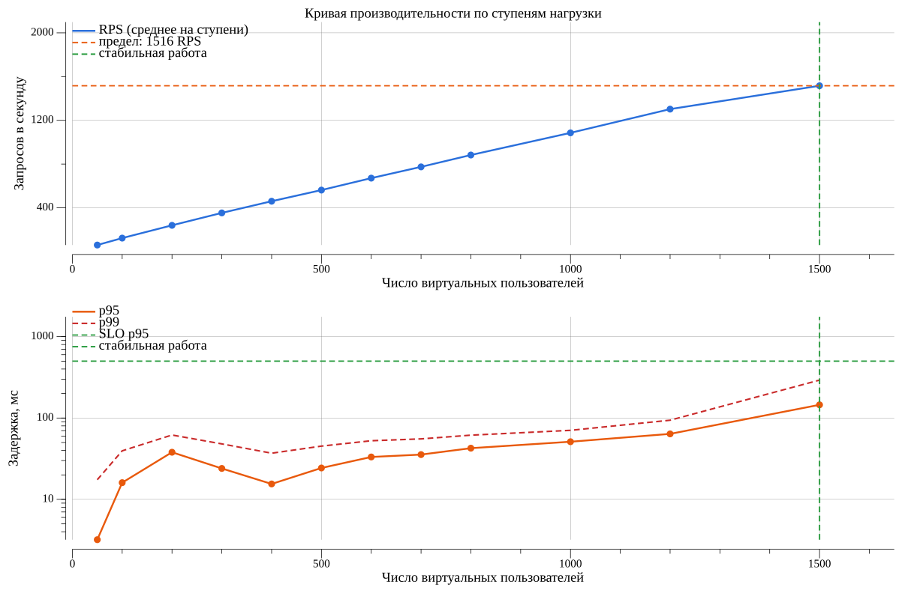
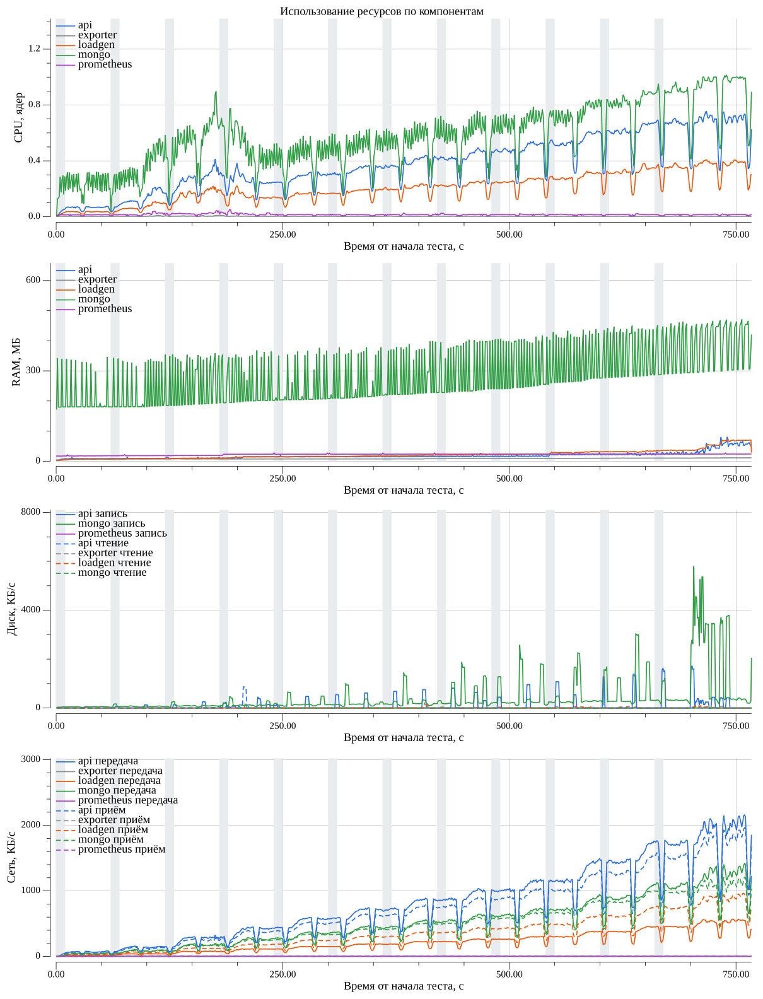

Ступенчатое увеличение нагрузки
Запросов544500
RPS среднее / медиана709 / 644
p50 / p95 задержки1.61 / 106 мс
p99 задержки264 мс
Отказы0.00%
Ошибочные операции0.00%
Стабильная работа до 1500 VU (~1516 RPS). Нарушение SLO начинается с не найдена в пределах теста. Максимальная пропускная способность 1516 RPS при 1500 VU.
Задержка
| Задержка, мс | count | min | mean | p50 | p75 | p90 | p95 | p99 | max |
|---|---|---|---|---|---|---|---|---|---|
| Все запросы | 544500 | 0.36 | 23.2 | 1.61 | 22.6 | 66.8 | 106 | 264 | 1158 |
| Корректные операции | 544500 | 0.36 | 23.2 | 1.61 | 22.6 | 66.8 | 106 | 264 | 1158 |
| Ошибочные операции | 0 | — | — | — | — | — | — | — | — |



Операции пользовательского сценария
| Операция | count | min | mean | p50 | p75 | p90 | p95 | p99 | max | Отказы | Ошибочные |
|---|---|---|---|---|---|---|---|---|---|---|---|
| book_appointment | 78918 | 0.71 | 25.3 | 1.66 | 28.5 | 81.1 | 118 | 212 | 748 | 0.00% | 0.00% |
| browse_schedule | 79061 | 0.45 | 14.7 | 1.12 | 16.7 | 49.1 | 66.6 | 113 | 451 | 0.00% | 0.00% |
| cancel_appointment | 23622 | 0.62 | 24.9 | 1.48 | 26.6 | 78.3 | 116 | 213 | 719 | 0.00% | 0.00% |
| complete_visit | 54924 | 0.60 | 23.4 | 1.48 | 24.6 | 74.8 | 109 | 204 | 728 | 0.00% | 0.00% |
| login | 79297 | 0.36 | 14.3 | 0.96 | 16.2 | 48.8 | 66.0 | 110 | 464 | 0.00% | 0.00% |
| my_appointments | 78792 | 0.45 | 14.6 | 1.07 | 15.2 | 49.1 | 67.5 | 115 | 452 | 0.00% | 0.00% |
| register | 16472 | 0.40 | 13.7 | 1.00 | 14.0 | 46.9 | 64.6 | 109 | 453 | 0.00% | 0.00% |
| start_visit | 55042 | 0.87 | 34.4 | 1.96 | 34.9 | 115 | 169 | 310 | 921 | 0.00% | 0.00% |
| visit_history | 78373 | 0.68 | 40.8 | 2.56 | 36.8 | 129 | 217 | 445 | 1158 | 0.00% | 0.00% |

Пропускная способность
| Показатель | count | min | mean | p50 | p75 | p90 | p95 | p99 | max |
|---|---|---|---|---|---|---|---|---|---|
| RPS за секунду | 768 | 7.00 | 709 | 644 | 1038 | 1518 | 1690 | 1841 | 1978 |


Фазы нагрузки
| Участок | VU | RPS ср. | RPS p50 | RPS p5 | p50 мс | p95 мс | p99 мс | Отказы | CPU api | CPU mongo | RAM api, МБ | SLO |
|---|---|---|---|---|---|---|---|---|---|---|---|---|
| разгон до 50 | 50 | 38.0 | 39.0 | 10.2 | 1.37 | 2.92 | 15.0 | 0.00% | 0.03 | 0.19 | 5.61 | да |
| 50 VU | 50 | 59.4 | 64.0 | 23.2 | 1.40 | 3.20 | 17.4 | 0.00% | 0.06 | 0.24 | 8.68 | да |
| разгон до 100 | 100 | 80.8 | 80.0 | 62.9 | 1.32 | 2.97 | 18.4 | 0.00% | 0.06 | 0.22 | 8.84 | да |
| 100 VU | 100 | 123 | 127 | 87.8 | 1.54 | 16.1 | 39.5 | 0.00% | 0.13 | 0.35 | 9.08 | да |
| разгон до 200 | 200 | 111 | 130 | 30.6 | 1.91 | 13.9 | 34.9 | 0.00% | 0.13 | 0.38 | 10.4 | да |
| 200 VU | 200 | 240 | 252 | 149 | 3.83 | 38.0 | 61.8 | 0.00% | 0.27 | 0.57 | 9.66 | да |
| разгон до 300 | 300 | 206 | 249 | 60.9 | 3.89 | 36.9 | 61.8 | 0.00% | 0.25 | 0.55 | 10.00 | да |
| 300 VU | 300 | 353 | 380 | 210 | 1.24 | 24.0 | 48.1 | 0.00% | 0.26 | 0.49 | 13.6 | да |
| разгон до 400 | 400 | 363 | 387 | 240 | 1.06 | 9.48 | 31.5 | 0.00% | 0.25 | 0.44 | 15.1 | да |
| 400 VU | 400 | 460 | 504 | 185 | 1.06 | 15.5 | 36.9 | 0.00% | 0.26 | 0.43 | 14.7 | да |
| разгон до 500 | 500 | 516 | 519 | 488 | 1.07 | 23.2 | 41.5 | 0.00% | 0.31 | 0.50 | 14.9 | да |
| 500 VU | 500 | 562 | 622 | 103 | 1.05 | 24.3 | 45.2 | 0.00% | 0.31 | 0.48 | 15.1 | да |
| разгон до 600 | 600 | 640 | 647 | 608 | 1.09 | 29.0 | 47.1 | 0.00% | 0.36 | 0.54 | 15.1 | да |
| 600 VU | 600 | 671 | 748 | 83.8 | 1.11 | 33.2 | 52.6 | 0.00% | 0.37 | 0.53 | 15.4 | да |
| разгон до 700 | 700 | 774 | 774 | 760 | 1.11 | 34.0 | 52.4 | 0.00% | 0.42 | 0.60 | 15.7 | да |
| 700 VU | 700 | 774 | 840 | 61.8 | 1.10 | 35.5 | 55.4 | 0.00% | 0.40 | 0.57 | 16.1 | да |
| разгон до 800 | 800 | 897 | 898 | 873 | 1.15 | 39.3 | 57.9 | 0.00% | 0.47 | 0.64 | 16.3 | да |
| 800 VU | 800 | 883 | 926 | 98.3 | 1.16 | 42.6 | 61.6 | 0.00% | 0.47 | 0.65 | 16.7 | да |
| разгон до 1000 | 1000 | 1020 | 1024 | 987 | 1.21 | 63.1 | 178 | 0.00% | 0.46 | 0.63 | 20.1 | да |
| 1000 VU | 1000 | 1085 | 1068 | 901 | 1.28 | 51.1 | 70.5 | 0.00% | 0.53 | 0.72 | 22.3 | да |
| разгон до 1200 | 1200 | 1012 | 1238 | 139 | 1.45 | 63.8 | 93.7 | 0.00% | 0.48 | 0.65 | 22.5 | да |
| 1200 VU | 1200 | 1303 | 1295 | 1092 | 1.71 | 63.8 | 94.0 | 0.00% | 0.60 | 0.80 | 23.0 | да |
| разгон до 1500 | 1500 | 1194 | 1444 | 239 | 8.17 | 106 | 187 | 0.00% | 0.55 | 0.75 | 25.3 | да |
| 1500 VU | 1500 | 1516 | 1544 | 1186 | 11.4 | 145 | 292 | 0.00% | 0.65 | 0.88 | 28.7 | да |
Поиск предела производительности


Использование ресурсов
| Компонент | Метрика | min | max | mean | median | p95 |
|---|---|---|---|---|---|---|
| api | CPU, ядер | 0.00 | 0.75 | 0.37 | 0.35 | 0.69 |
| api | Троттлинг CPU, с/с | 0.00 | 0.04 | 0.00 | 0.00 | 0.00 |
| api | Чтение с диска, КБ/с | 0.00 | 867 | 6.18 | 0.00 | 0.00 |
| api | Запись на диск, КБ/с | 0.00 | 1728 | 86.9 | 0.00 | 613 |
| api | RAM (working set), МБ | 3.79 | 79.9 | 18.3 | 15.3 | 48.7 |
| api | Сеть, приём КБ/с | 0.28 | 1964 | 700 | 625 | 1723 |
| api | Сеть, передача КБ/с | 0.36 | 2159 | 792 | 716 | 1921 |
| api | Процессы и потоки | 7.00 | 17.0 | 9.13 | 9.00 | 11.0 |
| exporter | CPU, ядер | 0.00 | 0.01 | 0.00 | 0.00 | 0.01 |
| exporter | Троттлинг CPU, с/с | 0.00 | 0.00 | 0.00 | 0.00 | 0.00 |
| exporter | Чтение с диска, КБ/с | 0.00 | 212 | 4.67 | 0.00 | 39.3 |
| exporter | Запись на диск, КБ/с | 0.00 | 0.00 | 0.00 | 0.00 | 0.00 |
| exporter | RAM (working set), МБ | 2.46 | 11.2 | 8.34 | 7.62 | 10.9 |
| exporter | Сеть, приём КБ/с | 0.22 | 0.54 | 0.45 | 0.48 | 0.48 |
| exporter | Сеть, передача КБ/с | 0.86 | 4.06 | 3.73 | 4.01 | 4.06 |
| exporter | Процессы и потоки | 5.00 | 7.00 | 5.90 | 6.00 | 7.00 |
| loadgen | CPU, ядер | 0.00 | 0.41 | 0.20 | 0.19 | 0.38 |
| loadgen | Троттлинг CPU, с/с | 0.00 | 0.00 | 0.00 | 0.00 | 0.00 |
| loadgen | Чтение с диска, КБ/с | 0.00 | 135 | 3.97 | 0.00 | 31.0 |
| loadgen | Запись на диск, КБ/с | 0.00 | 0.00 | 0.00 | 0.00 | 0.00 |
| loadgen | RAM (working set), МБ | 2.48 | 72.2 | 21.9 | 17.8 | 54.2 |
| loadgen | Сеть, приём КБ/с | 1.43 | 964 | 341 | 303 | 857 |
| loadgen | Сеть, передача КБ/с | 1.68 | 569 | 210 | 186 | 519 |
| loadgen | Процессы и потоки | 7.00 | 9.00 | 8.79 | 9.00 | 9.00 |
| mongo | CPU, ядер | 0.00 | 1.01 | 0.57 | 0.56 | 0.97 |
| mongo | Троттлинг CPU, с/с | 0.00 | 1.16 | 0.29 | 0.22 | 0.82 |
| mongo | Чтение с диска, КБ/с | 0.00 | 158 | 1.65 | 0.00 | 0.00 |
| mongo | Запись на диск, КБ/с | 26.2 | 5788 | 438 | 180 | 2233 |
| mongo | RAM (working set), МБ | 172 | 470 | 280 | 255 | 444 |
| mongo | Сеть, приём КБ/с | 0.21 | 1211 | 452 | 413 | 1059 |
| mongo | Сеть, передача КБ/с | 0.04 | 1421 | 492 | 440 | 1178 |
| mongo | Процессы и потоки | 39.0 | 154 | 92.3 | 84.0 | 148 |
| prometheus | CPU, ядер | 0.00 | 0.05 | 0.02 | 0.01 | 0.03 |
| prometheus | Троттлинг CPU, с/с | 0.00 | 0.00 | 0.00 | 0.00 | 0.00 |
| prometheus | Чтение с диска, КБ/с | 0.00 | 0.00 | 0.00 | 0.00 | 0.00 |
| prometheus | Запись на диск, КБ/с | 0.00 | 9.00 | 0.84 | 0.00 | 6.00 |
| prometheus | RAM (working set), МБ | 17.0 | 27.8 | 22.3 | 23.4 | 23.8 |
| prometheus | Сеть, приём КБ/с | 1.66 | 6.14 | 5.66 | 6.07 | 6.14 |
| prometheus | Сеть, передача КБ/с | 0.48 | 1.06 | 0.90 | 0.96 | 0.97 |
| prometheus | Процессы и потоки | 8.00 | 14.0 | 8.06 | 8.00 | 8.00 |

Коды ответов
| Код | Запросов |
|---|---|
| 200 | 394068 |
| 201 | 150432 |
Окружение прогона
| Компонент | Логические CPU | Квота CPU | Резерв RAM, МБ | Лимит RAM, МБ | Образ | ID образа |
|---|---|---|---|---|---|---|
| api | 0,1 | 1 | 512 | 512 | vitaline-lab6-api:20261115-200132-ramp-r4an | 579b68ac81b6 |
| exporter | 6,7 | — | 64 | 64 | vitaline-lab4-exporter:1 | 1d23c3f2327d |
| loadgen | 4,5 | — | 2048 | 2048 | vitaline-lab4-loadgen:1 | 48e1046c6d0e |
| mongo | 2,3 | 1 | 1024 | 1024 | mongo:7 | 9896df581dfd |
| prometheus | 6,7 | — | 768 | 768 | prom/prometheus:v3.5.0 | 63805ebb8d2b |